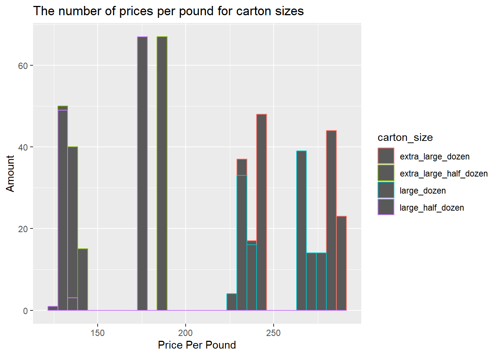
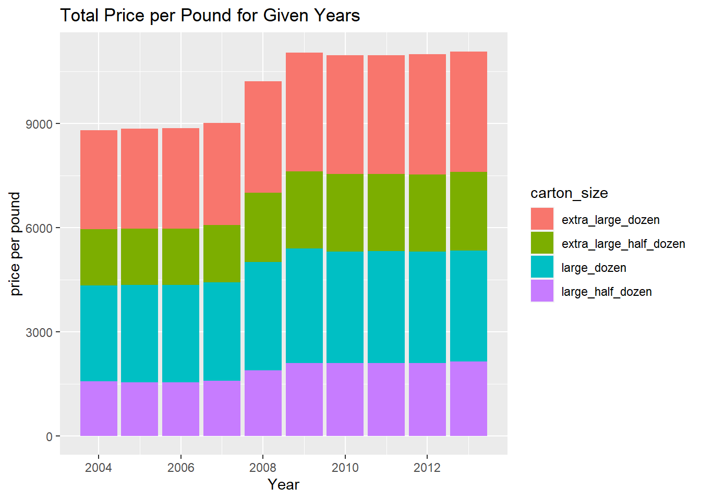

library(tidyverse)
library(ggplot2)
library(readr)
library(summarytools)
library(lubridate)
knitr::opts_chunk$set(echo = TRUE, warning=FALSE, message=FALSE)Challenge 7 Submission
challenge_7
CamNeedels
eggs
Visualizing Multiple Dimensions
Eggs <- read_csv(("B:/Needels/Documents/DACCS 601/DACSS_601_New/posts/_data/eggs_tidy.csv"))
Eggs# A tibble: 120 × 6
month year large_half_dozen large_dozen extra_large_half_dozen extra_l…¹
<chr> <dbl> <dbl> <dbl> <dbl> <dbl>
1 January 2004 126 230 132 230
2 February 2004 128. 226. 134. 230
3 March 2004 131 225 137 230
4 April 2004 131 225 137 234.
5 May 2004 131 225 137 236
6 June 2004 134. 231. 137 241
7 July 2004 134. 234. 137 241
8 August 2004 134. 234. 137 241
9 September 2004 130. 234. 136. 241
10 October 2004 128. 234. 136. 241
# … with 110 more rows, and abbreviated variable name ¹extra_large_dozenBriefly describe the data
This data is about the number of eggs coming from various dozen sizes. The dates vary from January 2004 until December 2013. This data looks solid however the extra large dozen column is all by itself and it isn’t very tidy. In order to make it tidy I decided to make it long by having each category of dozen be a different data point so that extra large dozen can fit in. I also lubridated the date in case I wanted to use the month in a data analysis.
Tidy Data (as needed)
#pivot longer to make each carton size into one category
EggsTidy <- Eggs%>%
pivot_longer(col = c(large_half_dozen, large_dozen, extra_large_half_dozen, extra_large_dozen),
names_to= "carton_size",
values_to= "price_per_pound")
EggsTidy# A tibble: 480 × 4
month year carton_size price_per_pound
<chr> <dbl> <chr> <dbl>
1 January 2004 large_half_dozen 126
2 January 2004 large_dozen 230
3 January 2004 extra_large_half_dozen 132
4 January 2004 extra_large_dozen 230
5 February 2004 large_half_dozen 128.
6 February 2004 large_dozen 226.
7 February 2004 extra_large_half_dozen 134.
8 February 2004 extra_large_dozen 230
9 March 2004 large_half_dozen 131
10 March 2004 large_dozen 225
# … with 470 more rows#lubridate in order to make month and year combined, unfortunately it doesn't have the day so it assumes every month is on the first.
EggsLubridate <- EggsTidy%>%
mutate( date = str_c(month, year , sep = "-"),
date = my(date))
EggsLubridate# A tibble: 480 × 5
month year carton_size price_per_pound date
<chr> <dbl> <chr> <dbl> <date>
1 January 2004 large_half_dozen 126 2004-01-01
2 January 2004 large_dozen 230 2004-01-01
3 January 2004 extra_large_half_dozen 132 2004-01-01
4 January 2004 extra_large_dozen 230 2004-01-01
5 February 2004 large_half_dozen 128. 2004-02-01
6 February 2004 large_dozen 226. 2004-02-01
7 February 2004 extra_large_half_dozen 134. 2004-02-01
8 February 2004 extra_large_dozen 230 2004-02-01
9 March 2004 large_half_dozen 131 2004-03-01
10 March 2004 large_dozen 225 2004-03-01
# … with 470 more rowsVisualization with Multiple Dimensions
I decided to go with a histogram with the first graph because I wanted to show the amount of cartons that sold at a specific price. I took it a step further this time by adding a title and newly named x and y axis’. Plus the color shows the distribution of prices quite nicely.
The second graph is a stacked bar chart and it works excellently. Many of the dates overlap with each other and I was trying to figure out a way to combine the specific data points. This combines all of the prices per pound and generates them into a year by year profit. It also does a good job separating the amounts because of the colors so you can easily see which carton_size had the greatest amount sold.
#I went with a point graph except this time I wanted to add a color fo each specific carton size. It looks nice but there are multiple data points on the same day so its weird seeing it stacked on each other
EggsLubridate%>%
ggplot(aes(x= price_per_pound,color = carton_size)) + geom_histogram() + labs(title = "The number of prices per pound for carton sizes", x = "Price Per Pound", y = "Amount")
#stacked bar graph with a title listed below. I filled the colors with each carton size as well thanks to the pivot_long.
EggsLubridate%>%
ggplot(aes(x = year, y = price_per_pound, fill = carton_size)) + geom_bar(position = "stack", stat = "identity") + labs(title = "Total Price per Pound for Given Years", x = "Year", y = "price per pound")